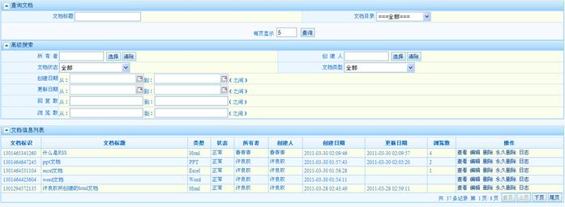
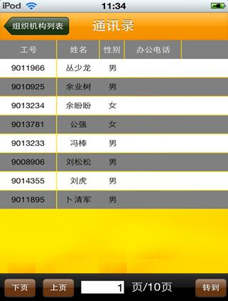

| 9.3 查询文档 |
查询文档，可以对所有文档(状态为正常和逻辑删除)进行简单查询和高级查询，简单查询条件有文档标题、文档目录（下拉选择）；高级查询有所有者、创建人、文档状态、文档类型、创建日期、更新日期、浏览数。
文档列表中的操作有：
查看（创建人/所有者/共享类型为完全控制、可编辑、可查看的人有此权限）、编辑（创建人/所有者/共享类型为完全控制和可编辑的人有此权限）、
删除（创建人/所有者/共享类型为完全控制的人有此权限）、
永久删除（超级管理员有此权限）、
共享（创建人/所有者/和共享权限为完全控制的人有此权限）、
订阅（没有权限查看的可以订阅）、
日志（所有人）

查询文档界面

文档日志查看界面